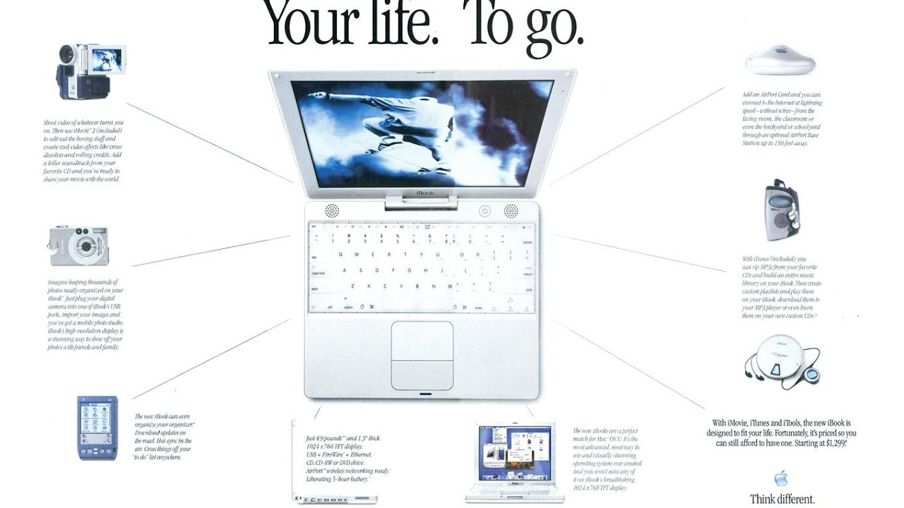

IBOOK G3 CLAMSHELL
The next generation iBook G3 lost the previous bold colours and bulky form-factor, as were the handle, latch-less design, and additional power connectors on the bottom surface.
The resulting iBook was available in white only, hence the name “snow” and incorporated transparent polycarbonate in its casing. It was 30% lighter, and occupied less than half of the volume of the model it replaced, being smaller in all 3 dimensions. Despite that, it added an extra USB port and a higher resolution screen. Apple claimed the compact design did not sacrifice durability, saying “twice as durable” as the previous model.
With the revision, apple began tranitioning to translucent and white polycarbonate casing in most of its consumer line, such as the iMac and the eMac. In contrast, most of its professional products used an anodised aluminium finish. Near the end of its run, the snow becam opaque and white instead translucent white and magnesium.

SPECS
The iBook started with the MacOS 10.4.6 until 10.6.8. It got a faster processor, the Intel Core Duo(T2xx) with a speed of 667MHz.
The iBook also have a intel GMA950 GPU and VRAM of 64 MB
It has a better a screen with max resolution of 1280 x 800.
STORAGRE -
The iBook’s storage was starting form 60 GB HD - 80 GB HD. It also got a Optical drive.
INPUT/OUTPUT
iBook snow has 2 USB 2.0 ports, 1 FireWire, 1 Audio Out stereo 24 bit, 1 speaker and a mono microphone. It also have a 10/100/1000BaseT Ethernet support, WiFi 802.11b/g and Bluetooth 2.0.
This was the game changer of notebooks at that time because of its cool design